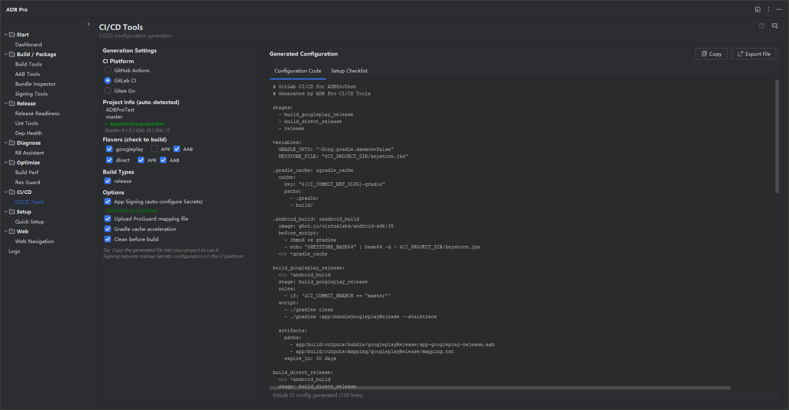

Generate production-ready CI/CD configurations for GitHub Actions, GitLab CI, and Jenkins —tailored to your project's build variants and signing setup.

CI/CD Tools generates production-ready continuous integration and deployment configuration files tailored to your Android project. Instead of writing pipeline definitions from scratch, the tool analyzes your Gradle setup — build variants, signing configs, SDK versions, and toolchain requirements — and produces a complete, commit-ready config for GitHub Actions, GitLab CI, or Jenkins.
The generated output is not a generic starter template. It reflects your project's actual structure: detected variant names, correct JDK and build-tools versions, Gradle caching strategies, and signing credentials mapped to CI environment variables. Whether you are adding CI to an Android project for the first time or migrating an existing pipeline, CI/CD Tools gets you a working configuration in one step.
Writing CI/CD configurations for Android projects from scratch is more difficult than it looks. Here are the common pain points developers face:
Generate a .github/workflows/android-build.yml file that builds, tests, and optionally signs your Android app. The workflow is configured with the correct JDK version (detected from your build.gradle), Android SDK platform, and build-tools version. Jobs include Gradle caching via actions/cache, artifact upload for APK/AAB outputs, and optional signing with keystore secrets stored as GitHub repository secrets. Trigger events (push, pull request, tag) are configurable in the generation dialog.
Generate a .gitlab-ci.yml file with stages for build, test, lint, and deploy. The pipeline uses the correct Docker image for your Android SDK version, configures Gradle caching with the GitLab CI cache mechanism, and includes stages for running unit tests and generating build artifacts. For projects with multiple flavors, each flavor can get its own build job running in parallel.
Generate a declarative Jenkinsfile with stages for checkout, environment setup, build, test, and archive. The pipeline includes proper Android SDK tool installation via the Jenkins Android Emulator plugin, Gradle wrapper invocation, and artifact archiving. Signing keystore credentials are referenced via Jenkins credential bindings rather than hardcoded into the pipeline.
CI/CD Tools parses your Gradle files to detect all available build variants and signing configurations. The generation dialog pre-populates pipeline jobs based on what it finds — if you have freeDebug, freeRelease, paidDebug, and paidRelease variants, the generated config includes jobs for each (or lets you select which to include). Signing configs detected in build.gradle are mapped to CI environment variables so secrets stay out of the config file.
The generation dialog provides a live preview of the configuration file with editable fields. Adjust JDK distribution (Temurin, Zulu, Corretto), add custom environment variables, insert pre-build or post-build scripts, change the Gradle version, or add Firebase App Distribution steps. The preview updates in real time as you modify options, so you can review the final output before generating.
When code shrinking is enabled, the generated pipeline includes a step to upload the mapping.txt file as a build artifact. This is critical for deobfuscating production crash reports —without the mapping file, stack traces from R8/ProGuard-obfuscated builds are unreadable. The mapping upload step runs automatically after a successful release build and stores the file alongside the APK/AAB artifacts. For GitHub Actions, it uses actions/upload-artifact; for GitLab CI, it adds the mapping to the job artifacts; for Jenkins, it archives the file in the build results.
Choose whether your CI pipeline produces APKs, AABs, or both. When "Both" is selected, the generated config includes separate build steps for assemble and bundle tasks with independent artifact upload paths. This mirrors the common release workflow where the AAB goes to the Play Store and a universal APK is distributed internally or via alternative channels.
Signing credentials are referenced as CI/CD secrets rather than hardcoded values. ADB Pro lets you customize the secret names used in the generated config: keystore file (KEYSTORE_BASE64), keystore password (KEYSTORE_PASSWORD), key alias (KEY_ALIAS), and key password (KEY_PASSWORD). This allows you to match your organization's existing secret naming conventions or comply with security team requirements.
Configure which Git branches trigger the build pipeline. The default is master, but you can set any branch name or pattern. For GitHub Actions, this maps to the on.push.branches trigger; for GitLab CI, it becomes a only: refs filter; for Jenkins, it configures the SCM branch specifier. Pull request triggers and tag-based triggers are also configurable.
| Platform | Config File | Caching | Signing Support | Artifact Upload |
|---|---|---|---|---|
| GitHub Actions | .github/workflows/*.yml | actions/cache | Repository secrets | upload-artifact |
| GitLab CI | .gitlab-ci.yml | CI cache | CI/CD variables | artifacts:paths |
| Jenkins | Jenkinsfile | Workspace cache | Credential bindings | archiveArtifacts |
CI/CD Tools can be triggered from several entry points in your IDE:
Once the dialog opens, follow these steps:
.github/workflows/ for GitHub Actions).To customize default behavior, go to Settings > Tools > ADB Pro > CI/CD Tools. Here you can set the default JDK distribution and version, default trigger events, whether to include test and lint stages, custom pre-build and post-build script snippets, and Firebase App Distribution integration.
After generating your CI/CD configuration, confirm everything works correctly: